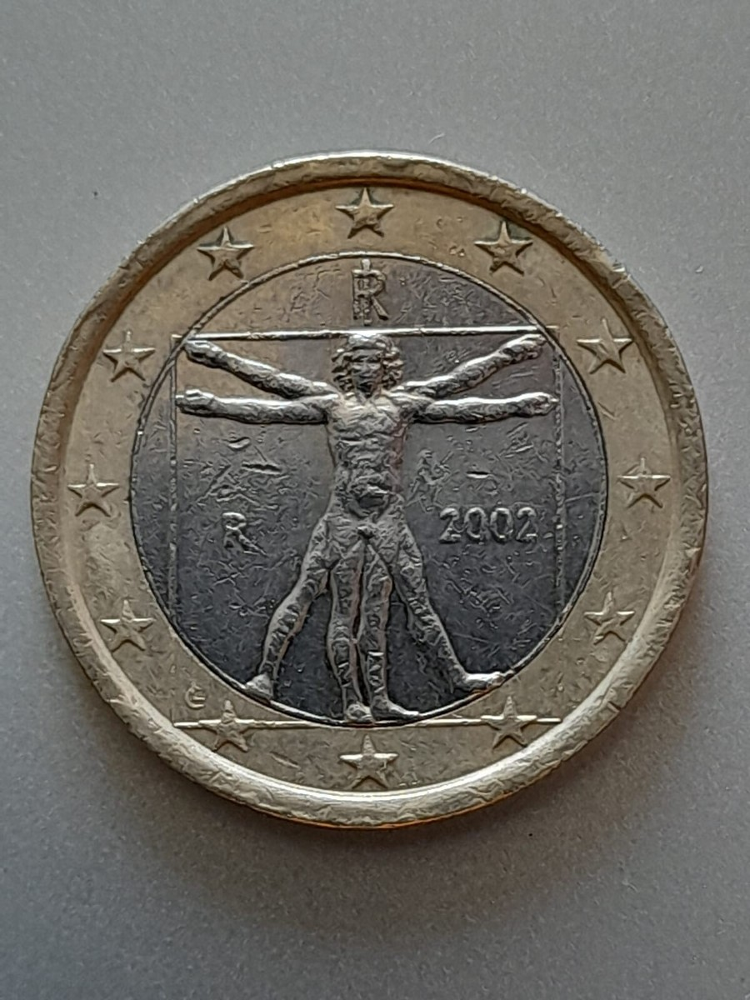

A Itália fica no sul da Europa e é conhecida por ter um formato parecido com uma bota. O país é banhado pelo Mar Mediterrâneo e faz fronteira com França, Suíça, Áustria e Eslovênia. Dentro do território italiano também estão dois países pequenos e independentes: o Vaticano e San Marino. Por estar localizada em uma região importante da Europa, a Itália mantém relações próximas com países como Alemanha, França e Espanha. Ela também faz parte da União Europeia e da OTAN, participando de acordos e parcerias econômicas e políticas. Essa localização facilita o comércio com outros países e contribui para a troca de culturas e costumes.
A Itália possui um sistema político democrático e é uma república parlamentar. Isso significa que o país não tem rei ou rainha, e que o Parlamento tem um papel muito importante nas decisões políticas. O presidente da República representa o país e exerce funções importantes, enquanto o primeiro-ministro é responsável por liderar o governo e coordenar os ministros. O Parlamento é dividido em duas partes: a Câmara dos Deputados e o Senado, que participam da criação e aprovação das leis. Dessa forma, o sistema político italiano é organizado para que diferentes instituições tenham responsabilidades na administração do país.
Este gráfico mostra a variação anual da economia italiana entre 2023 e 2025.
Fonte: Banco Mundial (World Bank). Dados de 2023 a 2025. Disponível em: https://data.worldbank.org/indicator/NY.GDP.MKTP.KD.ZG?locations=IT.
O Produto Interno Bruto (PIB) representa o valor dos bens e serviços produzidos em um país. O gráfico mostra sua evolução entre 2021 e 2025, em trilhões de dólares.
Fonte: Banco Mundial (World Bank). Dados de 2021 a 2025. Disponível em: https://data.worldbank.org/indicator/NY.GDP.MKTP.CD?locations=IT.
A moeda oficial da Itália é o euro (€), utilizado também por vários outros países da União Europeia. A Itália adotou o euro em 1999, inicialmente para transações bancárias e financeiras, enquanto as notas e moedas começaram a circular em 1º de janeiro de 2002. Antes disso, a moeda italiana era a lira. Atualmente, o euro é utilizado no dia a dia para compras, pagamentos e transações comerciais no país.

| Ano | População |
|---|---|
| 2023 | 58.984.216 habitantes |
| 2024 | 58.952.704 habitantes |
| 2025 | 58.915.656 habitantes |
Fonte: Banco Mundial (World Bank). Dados de 2023 a 2025. Disponível em: https://data.worldbank.org/indicator/SP.POP.TOTL?locations=IT.